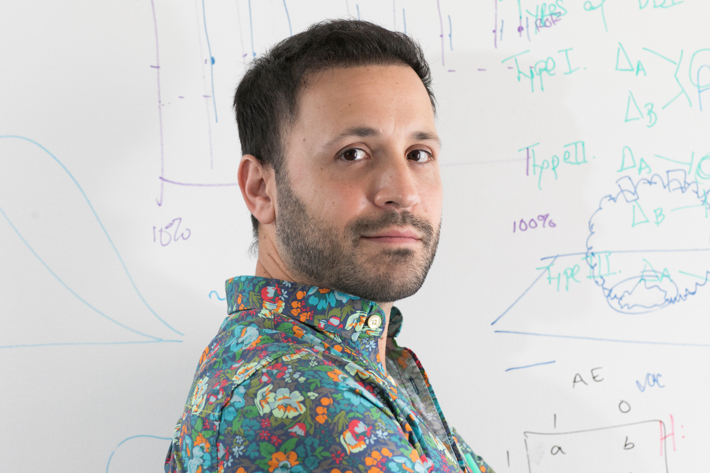
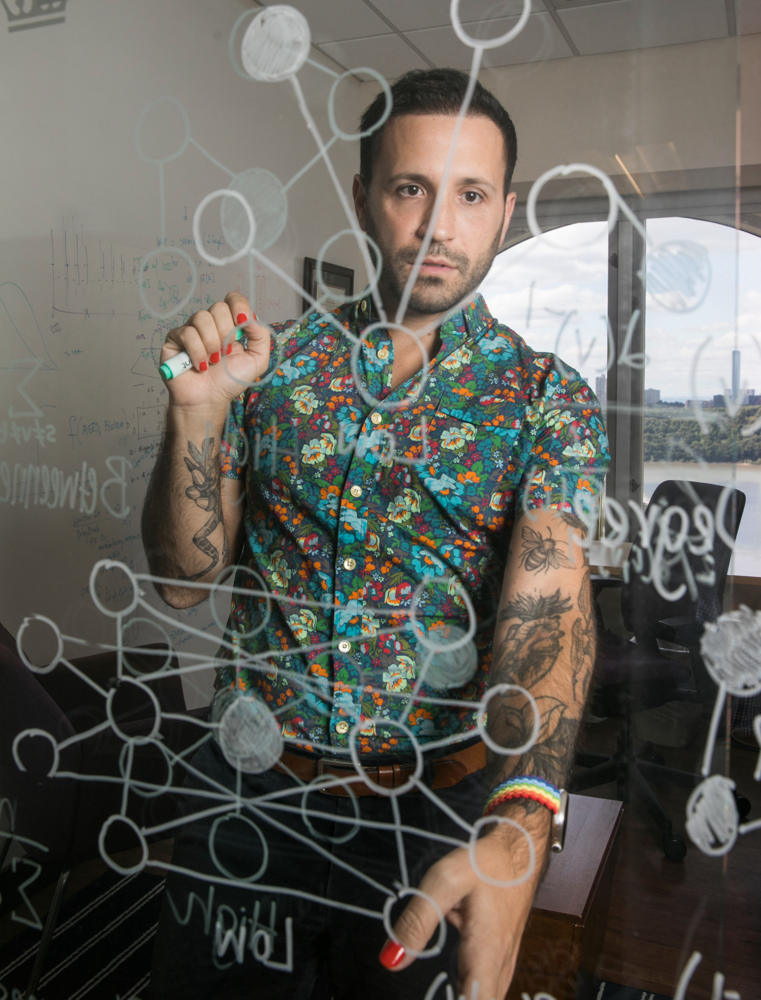
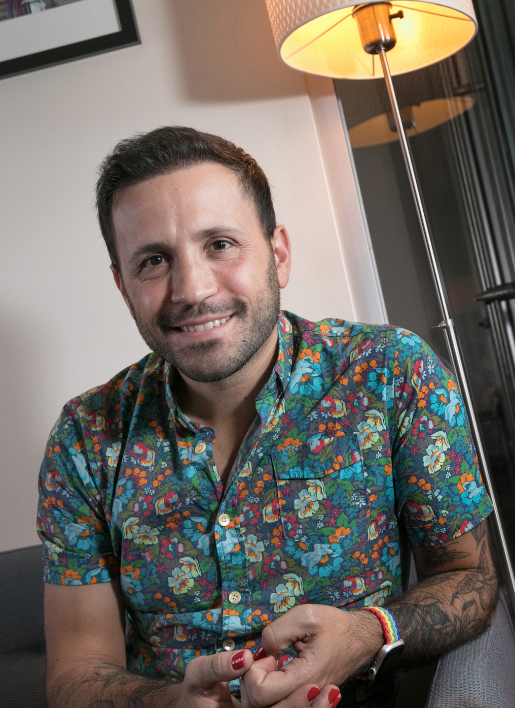
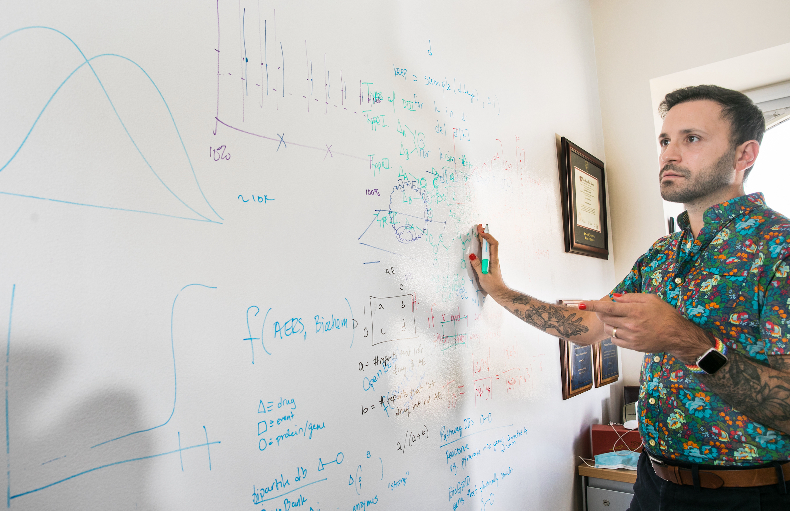
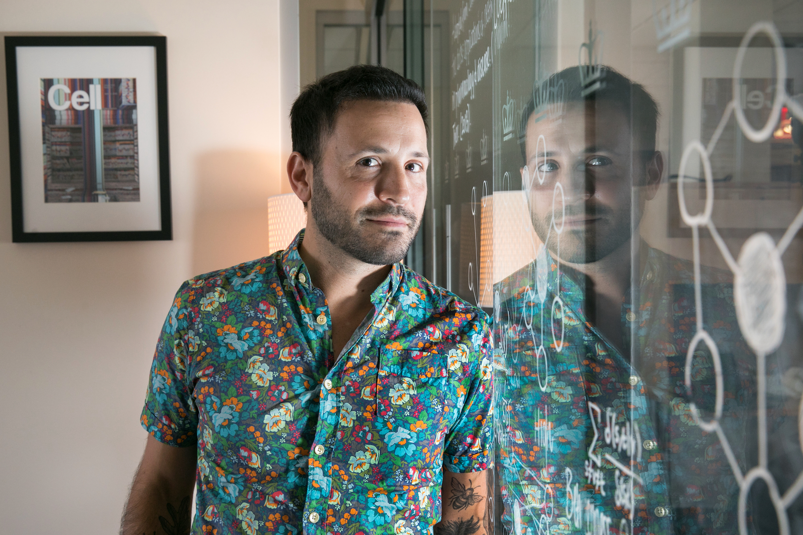
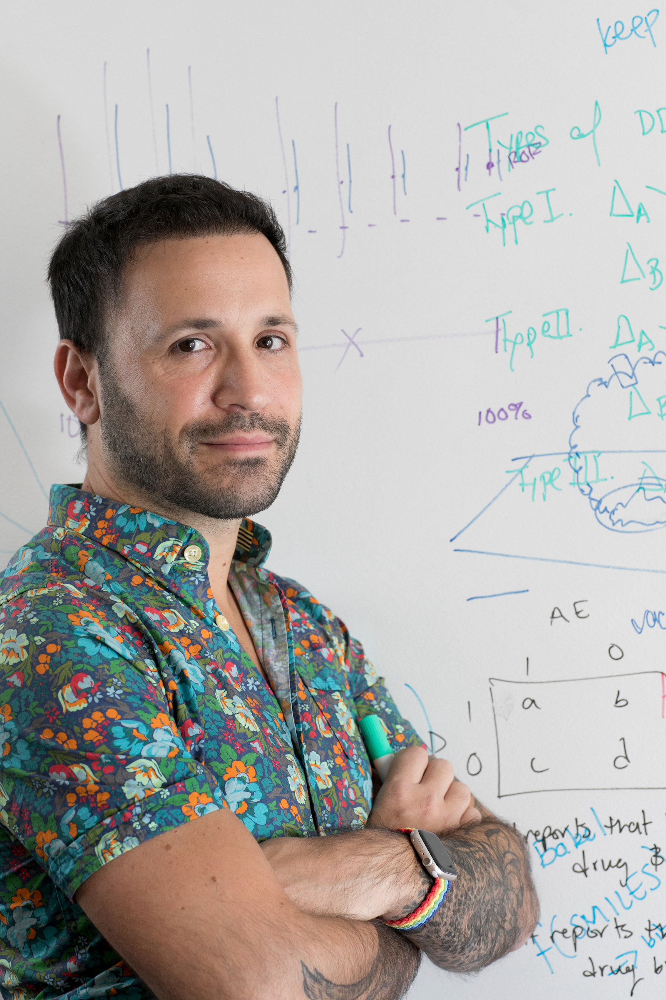

Photo credit goes to the very talented Timothy Lee. These photos
may be used for journalistic purposes. Please contact Nicholas for permission to access high resolution versions.
These images represent relatively accurate representions of Nicholas as of October 2022.
See here for older photos.





